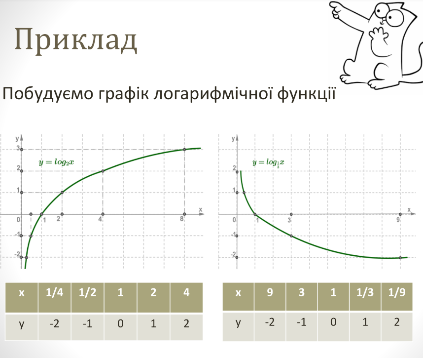

Область визначення:
D(y): x ϵ (0; +∞);
Область значень:
E(y): y ϵ (-∞;+∞);
Парність / непарність:
функція ні
парна, ні непарна;
Нулі функції: коли x = 1
логарифмічна функція y = log_a x
набуває значення, рівне 0 Натуральнi числа— це числа, якi використовуються під час лiчби предметiв. Наприклад : 1, 2, 3, 4, 5, 6, ...
Інтервали монотонності:
Коли a > 1 функція зростає на інтервалі (0; +∞);
Коли 0 < a < 1 функція спадає на інтервалі (0; +∞);
Екстремуми функції:
функція не має екстремумів;
Інтервали опуклості вгору та вниз:
Коли a > 1 графік функції опукла в гору на інтервалі (0; +∞).
Коли 0 < a < 1 графік функції опукла в низ на інтервалі (0; +∞).
